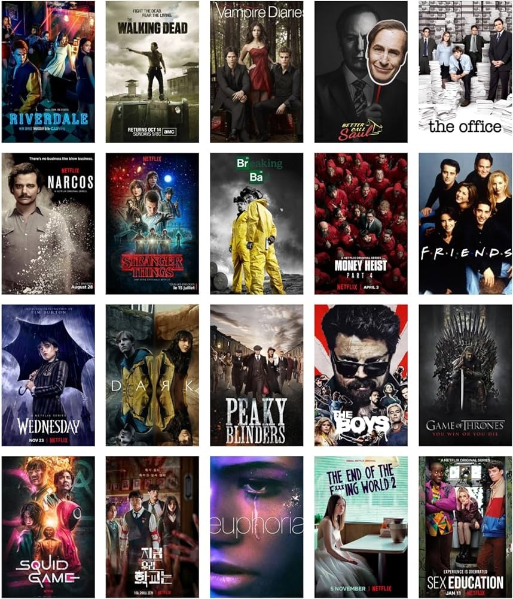

Bienvenue sur iStart le meilleur site dédié aux séries TV!
Découvrez des analyses, des critiques et des informations exclusives sur vos séries préférées.
Découvrez quelques-uns de nos articles

Analyse de Charmed
Participer à nos sondages
Quel est votre genre de série préféré ?
Regardez vos séries en ligne
